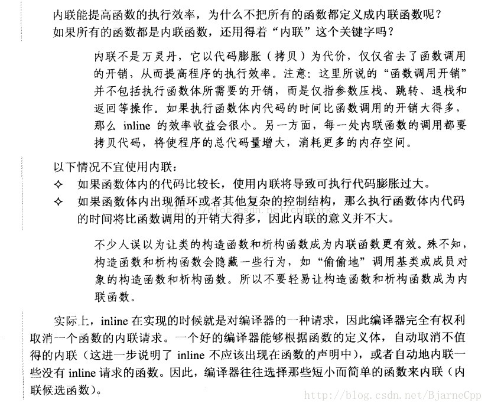

参考链接：https://blog.csdn.net/BjarneCpp/article/details/76044493
1.内联函数
在C++中我们通常定义以下函数来求两个整数的最大值：
1
2
3
4
| int max(int a, int b)
{
return a > b ? a : b;
}1234
|
为这么一个小的操作定义一个函数的好处有：
① 阅读和理解函数 max 的调用，要比读一条等价的条件表达式并解释它的含义要容易得多
② 如果需要做任何修改，修改函数要比找出并修改每一处等价表达式容易得多
③ 使用函数可以确保统一的行为，每个测试都保证以相同的方式实现
④ 函数可以重用，不必为其他应用程序重写代码
虽然有这么多好处，但是写成函数有一个潜在的缺点：调用函数比求解等价表达式要慢得多。在大多数的机器上，调用函数都要做很多工作：调用前要先保存寄存器，并在返回时恢复，复制实参，程序还必须转向一个新位置执行
C++中支持内联函数，其目的是为了提高函数的执行效率，用关键字 inline 放在函数定义(注意是定义而非声明，下文继续讲到)的前面即可将函数指定为内联函数，内联函数通常就是将它在程序中的每个调用点上“内联地”展开，假设我们将 max 定义为内联函数：
1
2
3
4
| inline int max(int a, int b)
{
return a > b ? a : b;
}1234
|
则调用：cout << max(a, b) << endl;
在编译时展开为：cout << (a > b ? a : b) << endl; 从而消除了把 max写成函数的额外执行开销。
2. 内联函数和宏
无论是《Effective C++》中的 “Prefer consts，enums，and inlines to #defines” 条款，还是《高质量程序设计指南——C++/C语言》中的“用函数内联取代宏”，宏在C++中基本是被废了，在书《高质量程序设计指南——C++/c语言》中这样解释到：

3. 将内联函数放入头文件
关键字 inline 必须与函数定义体放在一起才能使函数成为内联，仅将 inline 放在函数声明前面不起任何作用。
如下风格的函数 Foo 不能成为内联函数：
1
2
3
4
5
| inline void Foo(int x, int y);
void Foo(int x, int y)
{
} 12345
|
而如下风格的函数 Foo 则成为内联函数：
1
2
3
4
5
| void Foo(int x, int y);
inline void Foo(int x, int y)
{
} 12345
|
所以说，C++ inline函数是一种“用于实现的关键字”，而不是一种“用于声明的关键字”。一般地，用户可以阅读函数的声明，但是看不到函数的定义。尽管在大多数教科书中内联函数的声明、定义体前面都加了 inline 关键字，但我认为 inline 不应该出现在函数的声明中。这个细节虽然不会影响函数的功能，但是体现了高质量C++/C 程序设计风格的一个基本原则：声明与定义不可混为一谈，用户没有必要、也不应该知道函数是否需要内联。
定义在类声明之中的成员函数将自动地成为内联函数，例如：
1
2
3
4
5
| class A
{
public:
void Foo(int x, int y) { ... }
} 12345
|
但是编译器是否将它真正内联则要看 Foo函数如何定义
内联函数应该在头文件中定义，这一点不同于其他函数。编译器在调用点内联展开函数的代码时，必须能够找到 inline 函数的定义才能将调用函数替换为函数代码，而对于在头文件中仅有函数声明是不够的。
当然内联函数定义也可以放在源文件中，但此时只有定义的那个源文件可以用它，而且必须为每个源文件拷贝一份定义(即每个源文件里的定义必须是完全相同的)，当然即使是放在头文件中，也是对每个定义做一份拷贝，只不过是编译器替你完成这种拷贝罢了。但相比于放在源文件中，放在头文件中既能够确保调用函数是定义是相同的，又能够保证在调用点能够找到函数定义从而完成内联(替换)。
但是你会很奇怪，重复定义那么多次，不会产生链接错误？
我们来看一个例子：
1
2
3
4
5
6
7
8
9
10
11
12
13
14
15
16
17
18
19
20
21
22
23
24
25
26
27
28
29
30
31
32
33
34
35
|
class A
{
public:
A(int a, int b) : a(a),b(b){}
int max();
private:
int a;
int b;
};1234567891011
#include "A.h"
inline int A::max()
{
return a > b ? a : b;
}
12345678
#include <iostream>
#include "A.h"
using namespace std;
inline int A::max()
{
return a > b ? a : b;
}
int main()
{
A a(3, 5);
cout << a.max() << endl;
return 0;
}12345678910111213141516
|
一切正常编译，输出结果：5
倘若你在Main.cpp中没有定义max内联函数，那么会出现链接错误：
error LNK2001: unresolved external symbol "public: int __thiscall A::max(void)" (?max@A@@QAEHXZ)main.obj
找不到函数的定义，所以内联函数可以在程序中定义不止一次，只要 inline 函数的定义在某个源文件中只出现一次，而且在所有源文件中，其定义必须是完全相同的就可以。
在头文件中加入或修改 inline 函数时，使用了该头文件的所有源文件都必须重新编译。
4. 慎用内联
内联虽有它的好处，但是也要慎用，以下摘自*《高质量程序设计指南——C++/C语言》*：

而在Google C++编码规范中则规定得更加明确和详细：
内联函数：
Tip： 只有当函数只有 10 行甚至更少时才将其定义为内联函数.
定义: 当函数被声明为内联函数之后, 编译器会将其内联展开, 而不是按通常的函数调用机制进行调用.
优点: 当函数体比较小的时候, 内联该函数可以令目标代码更加高效. 对于存取函数以及其它函数体比较短, 性能关键的函数, 鼓励使用内联.
缺点: 滥用内联将导致程序变慢. 内联可能使目标代码量或增或减, 这取决于内联函数的大小. 内联非常短小的存取函数通常会减少代码大小, 但内联一个相当大的函数将戏剧性的增加代码大小. 现代处理器由于更好的利用了指令缓存, 小巧的代码往往执行更快。
结论: 一个较为合理的经验准则是, 不要内联超过 10 行的函数. 谨慎对待析构函数, 析构函数往往比其表面看起来要更长, 因为有隐含的成员和基类析构函数被调用!
另一个实用的经验准则: 内联那些包含循环或 switch 语句的函数常常是得不偿失 (除非在大多数情况下, 这些循环或 switch 语句从不被执行).
有些函数即使声明为内联的也不一定会被编译器内联, 这点很重要; 比如虚函数和递归函数就不会被正常内联. 通常, 递归函数不应该声明成内联函数.(递归调用堆栈的展开并不像循环那么简单, 比如递归层数在编译时可能是未知的, 大多数编译器都不支持内联递归函数). 虚函数内联的主要原因则是想把它的函数体放在类定义内, 为了图个方便, 抑或是当作文档描述其行为, 比如精短的存取函数.
-inl.h文件：
Tip： 复杂的内联函数的定义, 应放在后缀名为 -inl.h 的头文件中.
内联函数的定义必须放在头文件中, 编译器才能在调用点内联展开定义. 然而, 实现代码理论上应该放在 .cc 文件中, 我们不希望 .h 文件中有太多实现代码, 除非在可读性和性能上有明显优势.
如果内联函数的定义比较短小, 逻辑比较简单, 实现代码放在 .h 文件里没有任何问题. 比如, 存取函数的实现理所当然都应该放在类定义内. 出于编写者和调用者的方便, 较复杂的内联函数也可以放到 .h 文件中, 如果你觉得这样会使头文件显得笨重, 也可以把它萃取到单独的 -inl.h 中. 这样把实现和类定义分离开来, 当需要时包含对应的 -inl.h 即可。